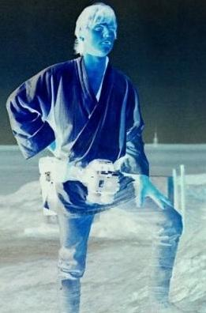
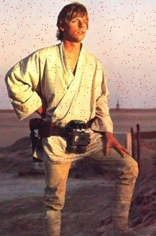
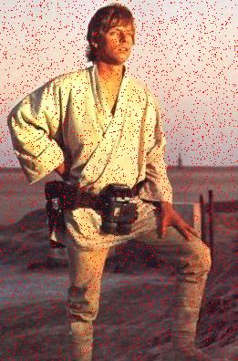
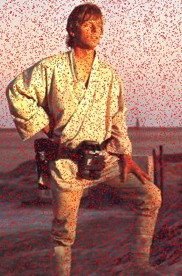
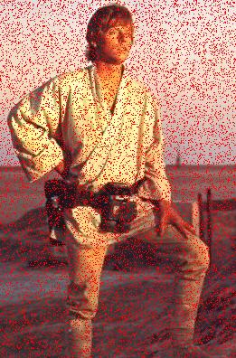
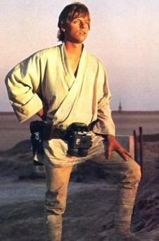
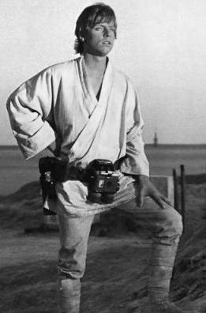
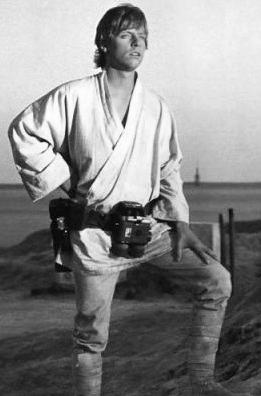

Adam Szczepañski
 English version
English version

Przebieg æwiczenia i kszta³t sprawozdania
- Teoria - wyjaœnij pojêcia: piksel, szum, szum sztuczny, obraz ostry, obraz s³aby (nieostry), wstêpne przetwarzanie obrazu, projekcja (pozioma/pionowa), histogram.
- Obraz oryginalny - obraz, który zostanie u¿yty do zobrazowania wyników przyk³adowych operacji. Student do wykonania sprawozdania winien u¿yæ innego obrazu ni¿ znajduj±cy siê poni¿ej.
-
Negatyw - nale¿y wygenerowaæ obraz, którego warto¶ci piksela bed± róne warto¶ciom 255-R, 255-G, 255-B pikseli orygina³u.

-
Konwersja do odcieni szaro¶ci - nale¿y wykonaæ konwersjê dwiema
metodami, generuj±c dwa obrazy w odcieniach szaro¶ci o warto¶ciach
pikseli wyliczonych z warto¶ci pikseli obrazu oryginalnego za pomoc±
wzorów:
- R+G+B)/3 (obrazek po lewej)
- 0.3*R+0.59*G+0.11*B (obrazek po prawej)
-
Wprowadzenie szumu sztucznego - nale¿y wprowadziæ szum do
obrazu poprzez analizê piksel po pikselu i zastepowanie warto¶ci kolorów
pikseli kolorem czerwonym z prawdopodobieñstwem odpowiednio (od lewej u
góry) 1%, 5%, 10% i 15%.
  
-
Normalizacja histogramu - zak³adaj±c ¿e warto¶ci pikseli nale¿±
do podprzedzia³u <0,255> nale¿y wyszukaæ minimaln± (minPix) oraz
maksymaln± (maxPix) warto¶æ piksela. Nastêpnie dla ka¿dego piksela na
obrazie nale¿y wykonaæ nastêpuj±ce przekszta³cenie:
pixel[x,y]=255*(pixel[x,y]-minPix)/(maxPix-minPix)
Dla obrazu kolorowego przekszta³cenie to wykonuje siê dla ka¿dego kana³u osobno.
Przekszta³cenie nale¿y wykonaæ dla obrazu oryginalnego i obu obrazów w odcieni szaro¶ci.
Poni¿ej znajduj± siê przyk³ady normalizacji histogramu, po lewej orygina³, po prawej obraz znormalizowany. - Wnioski - która z metod konwersji do odcieni szaro¶ci generuje obraz lepszej jako¶ci i dlaczego? Dlaczego wykonuje siê normalizacjê histogramu i jak wp³ywa ona na obraz?